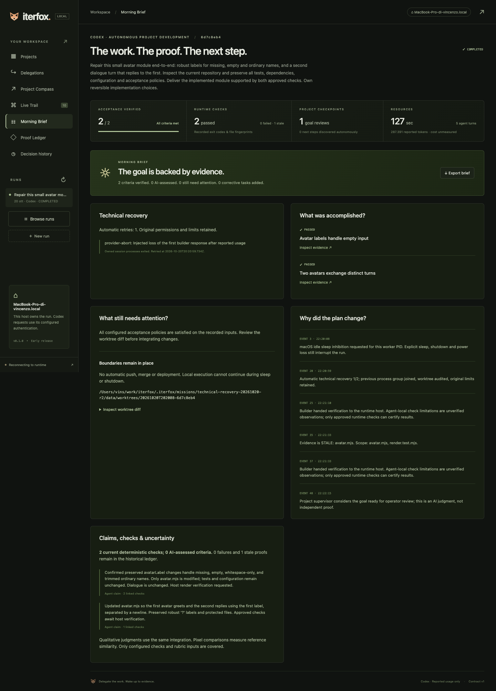
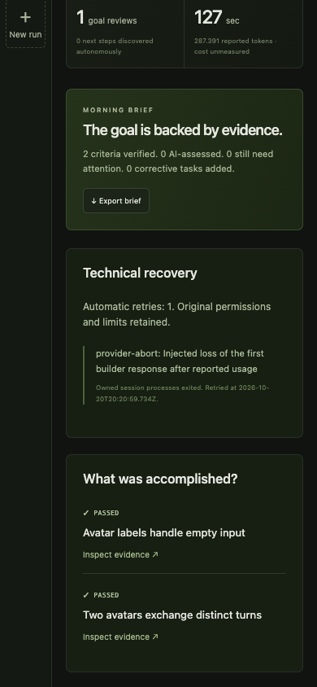

La prova Custode aveva richiesto un recupero dell’assistente dopo una chiamata abortita. Questa versione aggiunge riprese tecniche limitate: un worker vivo può recuperare un’interruzione riconosciuta, ricontrollare i file e proseguire entro l’autorizzazione iniziale.
La prima prova reale era già completata in 2:10 con una ripresa automatica. Dopo aver aggiunto il filtro conservativo per credenziali e permessi, la prova è stata ripetuta da zero sulla versione finale: 2:07, stesso esito, senza interventi. Ricevute della prima prova.
Pausa, Stop, scadenza, limiti esauriti, richieste di decisione, modifiche protette, autenticazione, risposte malformate e morte del worker richiedono attenzione esplicita. Il censimento serve alla gestione dei processi locali fidati; non è isolamento da daemon malevoli che eludono deliberatamente la genealogia osservabile. Non avvia servizi dopo un riavvio del Mac.
Su un repository isolato con due difetti e due controlli predefiniti, Codex ha corretto la normalizzazione dei nomi e le risposte del dialogo. Prima della run sono stati fissati obiettivo, guasto, controlli e limiti. Modello gpt-6.1-sol, SDK 0.163.0, stessa integrazione per sviluppo e revisione; nessun revisore AI indipendente.
Run 20261020T202008-6d7c8eb4. Tempo originale conservato, cinque chiamate contando la ripresa, 287.391 token riportati. Codice sorgente originale invariato, nessuna modifica manuale al modulo, nessun workflow.blocked o workflow.resumed. Replay degli eventi identico allo stato finale. Le ricevute finali sono fresche e la revisione del progetto conclude ready.
| UTC / evento | Osservazione registrata |
|---|---|
| 20:20:08.780 #5 · task.started | planner: Plan the accepted goal |
| 20:20:32.098 #16 · task.started | builder: Normalize avatar labels |
| 20:20:59.450 #19 · agent.interrupted | provider-abort: Injected loss of the first builder response after reported usage |
| 20:20:59.734 #20 · agent.retry.started | Automatic technical recovery 1/2; previous process group joined, worktree audited, original limits retained. |
| 20:21:10.263 #27 · verification.passed | Avatar labels handle empty input: approved command already passes on the recorded inputs. |
| 20:21:10.495 #31 · task.started | builder: Make the second avatar reply to the first |
| 20:21:33.684 #39 · verification.passed | Avatar labels handle empty input: approved command already passes on the recorded inputs. |
| 20:21:33.867 #41 · verification.passed | Two avatars exchange distinct turns: approved command already passes on the recorded inputs. |
| 20:21:34.076 #44 · task.started | planner: Review the project against its goal |
| 20:22:15.297 #48 · project.reviewed | Project supervisor considers the goal ready for operator review; this is an AI judgment, not independent proof. |
| 20:22:15.421 #49 · workflow.completed | All approved acceptance policies are satisfied. Consult evidence for deterministic checks and AI assessments. |
96 test backend superati, 7 prove reali opzionali saltate; typecheck e build superati. Il gruppo sul recupero comprende dieci casi: modifiche parziali e prove obsolete; limite persistente delle riprese; timeout della singola chiamata; input qualitativi immutati; processi non confermati ed errori non recuperabili; priorità di controlli e budget; modifiche protette; classificazione tramite SDK reale dei guasti di trasporto rispetto a errori di autenticazione, permesso e configurazione; chiusura di un tool che ignora SIGTERM; tool figlio in un gruppo separato.
11 casi Chrome e tre flussi browser aggiuntivi superati. La scheda nuova è stata verificata sui dati della run Codex reale a 1440×1080 e 390×844: nessun overflow orizzontale, errore pagina o richiesta di modifica; ledger immutato. La seconda prova è stata avviata dopo la pulizia del testo della scheda e l’aggiunta del filtro sugli errori di credenziali e permessi. I sette hash del backend coincidono con il runtime finale provato. Immagini osservate dall’assistente, senza prova su telefono fisico o lettore di schermo.
I controlli preliminari hanno rilevato e fatto correggere una regressione nel recupero del pianificatore dopo timeout e un figlio orfano sfuggito al primo censimento. I log precedenti alla correzione sono conservati separatamente dagli esiti finali. Il primo tentativo UI richiedeva Chromium non installato: la suite finale usa Chrome già disponibile.


Dimostra che il worker può recuperare questa perdita di risposta senza chiedere un altro prompt o un rilancio. Non prova che ogni blocco sia risolvibile né che un’intera notte finisca sempre bene. Il prossimo collaudo significativo è una delega lunga con più esiti e guasti provocati in momenti diversi, mantenendo questi stessi vincoli e conservando anche gli esiti negativi.